Week 3 - Organ Designing and World Creation (Blender)
In week 3 our group progressed through timeline phase 3 (blender) which included creating the VR classroom and designing organs that will be featured in our lesson’s minigame. One of our members also took the initiative to re-create the world in SketchUP so we will get a sense of the scale of our world before we attempt to build it. Below will also show each organ that our team designed during this week, and any issues that occurred during the creation process.
World Creation: SketchUP - Vansh & Beverly In the start of week 3, Vansh proposed that creating our playspace on SketchUP would make designing the world on Blender and Unity easier as we would get a better grasp on the sense of scale. He proceeded to swiftly produce the following product (Figure ) based on Alissa's drafts created prior in week 1. Due to program limitations Vansh was not able to replicate the drafts made by Alissa perfectly but his efforts helped make our vision clearer for the Blender and Unity process.
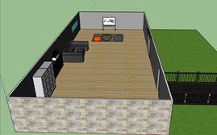 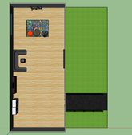Figure - three dimensional scale of the VR classroom created by Vansh on SketchUP.
Designing Human Organs on Blender Beverly: Brain I crafted the brain by merging two spheres together and connecting two tubes on the back of the brain to represent veins. It was all smooth sailing, although an issue I ran into while creating this included the texture not appearing (see left of Figure) but it was quickly solved by recalculating the outside mesh in object mode.
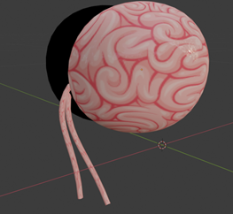 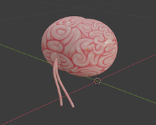 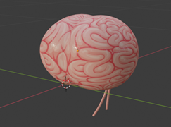Figure - object: brain created by Beverly in Blender.
Alisa: Heart I initially used a cube and subdivided the surface to create rough points for the heart. I shaped it into a fox face and then added more points by ‘cutting’ it, to better shape it into a rough heart. I worked in halves to optimize efficiency as well as symmetry, and then mirrored it into the y axis. Towards the end I optimized the surface level and added smooth shading for a polished finish. I had a lot of trouble creating points for the heart and had to manually add them (rather than auto looping around) which was a lengthy process. 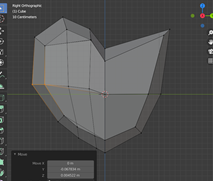 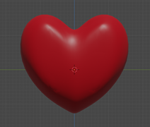 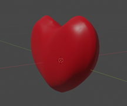Figure - object: heart created by Alisa in Blender.
Kaylyn: Bladder I made the bladder by starting with a sphere and three cylinders. I modelled and shaped each of them individually. I ran into many issues while completing this, the biggest of which was joining all the objects together without it ruining the shape of the whole thing. Towards the end I added a subdivision modifier to smoothen the objects. 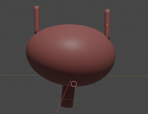 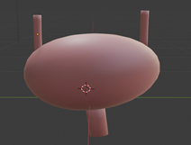 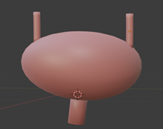Figure - object: bladder created by Kaylyn in Blender.
Charles: Pancreas I used a rectangle and a ball to make my pancreas. I made the rectangle look like a pancreas by adding a rectangle, shrinking it, and making the figure rounder. During the completion process, I encountered many problems, the last of which was to turn the rectangle into a curve, making the rectangle look more like a pancreas rather than a hammer. 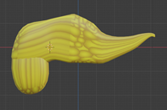 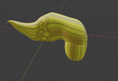 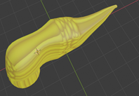Figure - object: Pancreas created by Charles in Blender.
Dante: Lungs I made the lungs by using a single long cylinder and two shorter angled cylinders to make the trachea. In addition, I used a metaball to eliminate the gaps between the three cylinders and make the trachea smoother. When I began creating the actual lungs I encountered the problem of ‘what object to use as the shape of the lungs’. After looking through the options a metaball type ellipsoid was close enough to the shape of lungs that I could sculpt them to make them look like lungs. Lastly, I had to add texture to the lungs which was hard to find, but eventually found one that fit well. 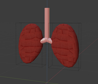 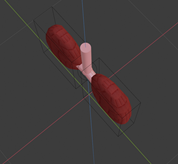 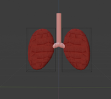Figure - object: lungs created by Dante in Blender.
Vansh: Eyes I made the eye using a UV sphere and flattened it on one side to a tiny extent to create the front side of the eye and then made the pupil by changing the middle rings of the eye to a black color and 2 other rings to create the iris. I then copied the first eye to create another one. 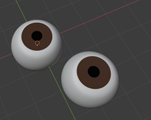 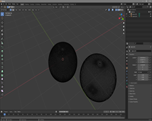Figure - object: Eyes created by Vansh in Blender.